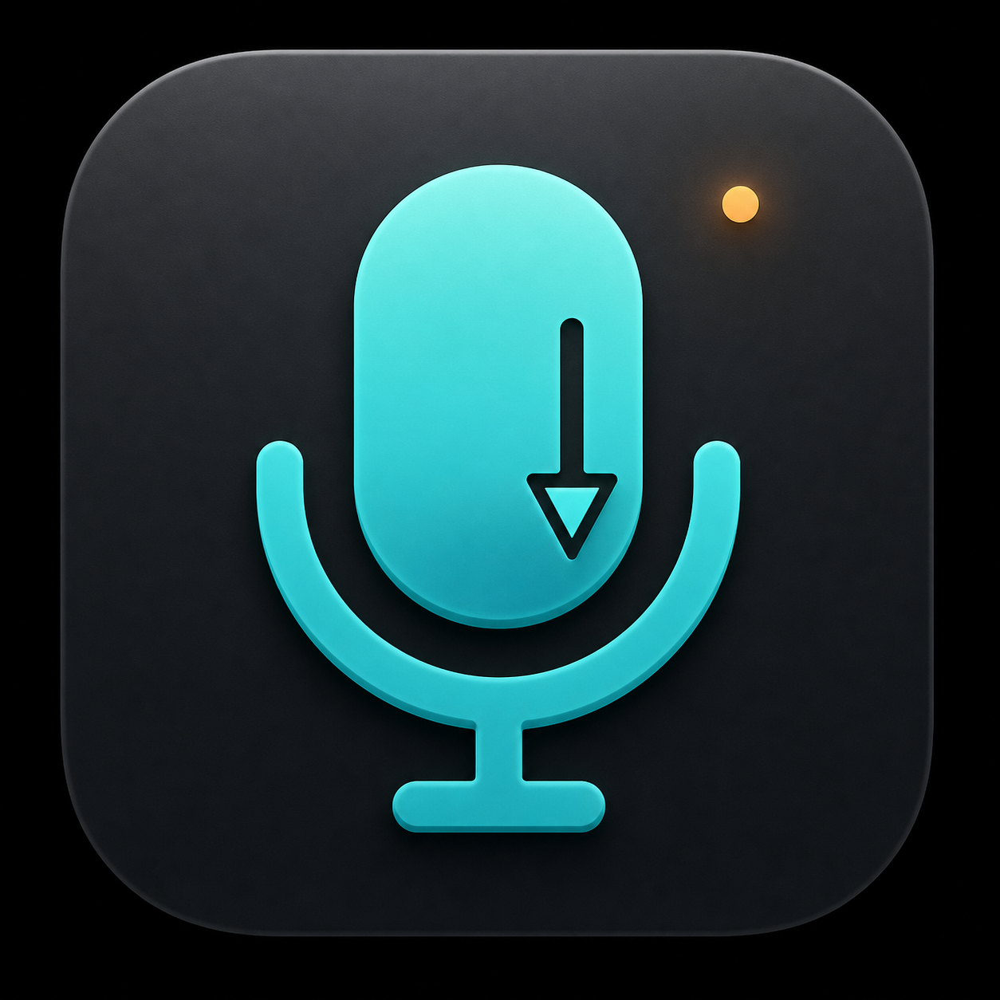

Kürzel drücken.
Setze den Cursor in dein Textfeld. Mit ⌥ ⇧ Leertaste startest du die Aufnahme. Das Kürzel lässt sich anpassen.

OpenDictate Über die AppEIN KLEINER HELFER FÜR macOS
Sprich, statt alles zu tippen. OpenDictate macht aus deiner Stimme Text und fügt ihn in die App ein, in der du gerade arbeitest.
So funktioniert’sEigener OpenAI API-Schlüssel · Internet erforderlich
GEDANKEN FÜR SPÄTER
Die besten Ideen kommen selten dann, wenn ich schon die Hände auf der Tastatur habe.
BEISPIEL · KEINE LIVE-AUFNAHME
VON DER STIMME IN DEIN TEXTFELD
Setze den Cursor in dein Textfeld. Mit ⌥ ⇧ Leertaste startest du die Aufnahme. Das Kürzel lässt sich anpassen.
Diktiere deine Nachricht oder Notiz. Drücke das Kürzel erneut, sobald du fertig bist.
OpenAI transkribiert deine Aufnahme. OpenDictate fügt den Text ein. Falls das nicht klappt, kannst du ihn aus der Zwischenablage einfügen.
KLEIN, MIT KLAREN GRENZEN
OpenDictate konzentriert sich auf einen Ablauf: aufnehmen, transkribieren, einfügen.
Dein OpenAI API-Schlüssel liegt im macOS-Schlüsselbund. Für die Transkription fallen API-Nutzungskosten bei OpenAI an.
Die Spracherkennung läuft online. OpenDictate enthält keine Analyse- oder Tracking-Funktion. Der fertige Text bleibt zum Einfügen in deiner Zwischenablage.
Die App wird noch geprüft und verbessert. Ein signierter und notarisierter öffentlicher Download steht derzeit nicht bereit.